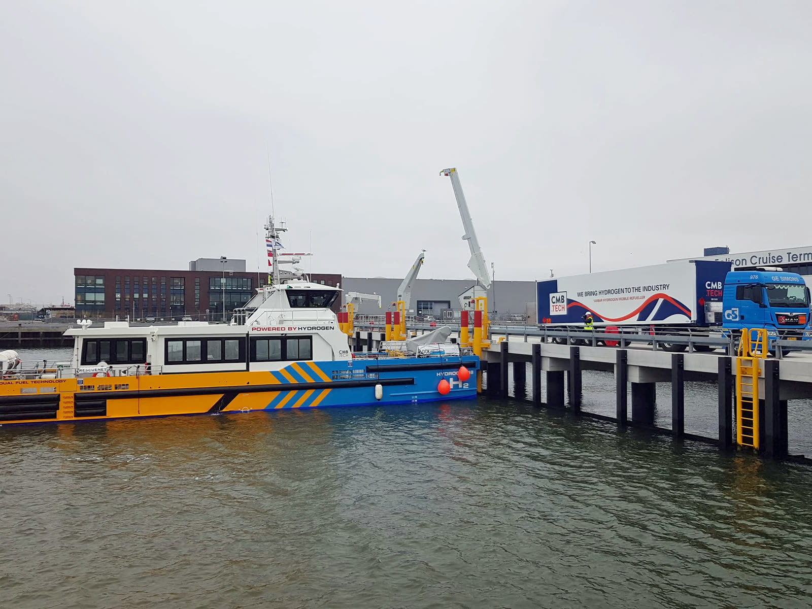

Sonderbau in Rekordzeit: In unter sechs Monaten vom Lastenheft zur ADR/TPED-Zulassung — dank eigener Baumuster und Prüfwerk im Haus.

Mönchengladbach, Juni 2026 — CyTec hat einen horizontalen Gasetrailer als Sonderbau an einen europäischen Industriegas-Konzern übergeben. Vom finalen Lastenheft bis zur Zulassung vergingen weniger als sechs Monate — möglich durch eigene Baumuster und die enge Verzahnung von Engineering, Fertigung und Prüfwerk unter einem Dach.
Sonderanforderungen im Detail
Der Kunde benötigte eine vom Standard abweichende Behälterkonfiguration mit angepasster Achslastverteilung für innerstädtische Belieferung. Unser Engineering entwickelte die Lösung auf Basis eines bestehenden Baumusters — inklusive kompletter Zulassungsdokumentation nach ADR/TPED.
Warum das relevant ist
Konzern-Hersteller nehmen Sonderkonfigurationen oft gar nicht erst an oder kalkulieren lange Projektlaufzeiten. Als Mittelständler mit kurzen Entscheidungswegen liefert CyTec genau diese Lösungen — schnell, zugelassen und mit Prüfservice über die gesamte Lebensdauer.